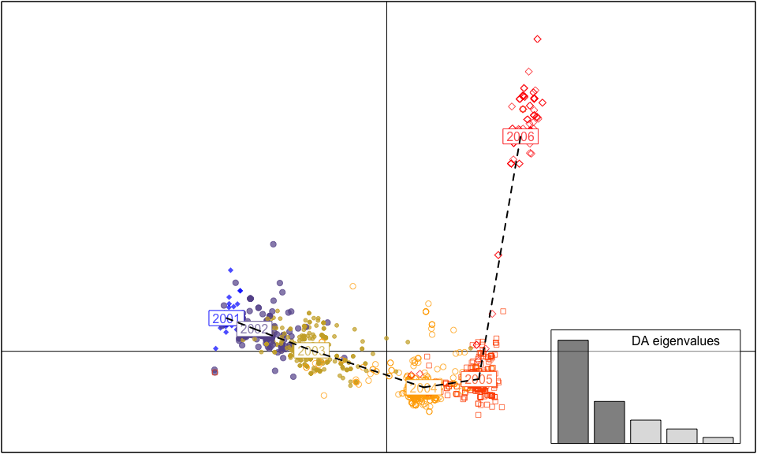
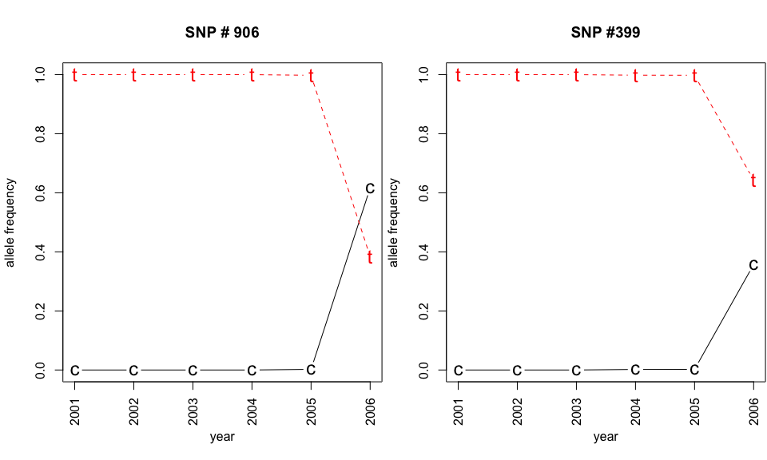

Often we want to infer population structure by determining the number of clusters (groups) observed without prior knowledge. Several approaches can be used to infer groups such as for example K-means clustering, Bayesian clustering using STRUCTURE, and multivariate methods such as Discriminant Analysis of Principal Components (DAPC) (Jombart et al. 2010; Pritchard et al. 2000; Grünwald & Goss, 2011). A STRUCTURE-like approach assumes that markers are not linked and that populations are panmictic (Pritchard et al. 2000). To use model-free methods K-means clustering based on genetic distance or DAPC are more convenient approaches for populations that are clonal or partially clonal. Here we explore DAPC further.
DAPC was pioneered by Jombart and colleagues (Jombart et al. 2010) and can be used to infer the number of clusters of genetically related individuals. In this multivariate statistical approach variance in the sample is partitioned into a between-group and within-group component, in an effort to maximize discrimination between groups. In DAPC, data is first transformed using a principal components analysis (PCA) and subsequently clusters are identified using discriminant analysis (DA). This tutorial is based on the vignette written by Thibaut Jombart. We encourage the user to explore this vignette further. The vignette can also be opened within R by executing adegenetTutorial("dapc").
We will use the seasonal influenza dataset H3N2 data containing 1903 isolates genotyped for 125 SNPs located in the hemagglutinin segment. This dataset as well as the dapc() function is part of the adegenet package.
# DAPC requires the adegenet package. Let's load this package:
library(adegenet)
data(H3N2) # load the H3N2 inflluenza data. Tye ?H3N2 for more info.
pop(H3N2) <- factor(H3N2$other$epid)
dapc.H3N2 <- dapc(H3N2, var.contrib=TRUE, scale=FALSE, n.pca=30, n.da=10)
scatter(dapc.H3N2, cell=0, pch=18:23, cstar=0, mstree=TRUE, lwd=2, lty=2)
The dapc() variables refer to:
var.contrib when set to FALSE, flag removes contribution from original variables from output. We will look at this later to see which loci are responsible for separatig populations.n.pca is the number of axes retained in the Principal Component Analysis (PCA). If set to NULL selection is interactive, which we avoid here but can be explored by the user.n.da is the number of axes retained in the Discriminant Analysis (DA). If set to NULL selection is interactive, which we avoid here but can be explored by the user.The scatter() function is part of the ade4 pacakge and plots results of a DAPC analysis.
As you can see, each year between 2001 to 2005 is a cluster of H3N2 strains separated by axis 1. In contrast, axis 2 separates the strains observed in the 2006 cluster from the clusters observed during 2001-5, indicating that the strains observed in 2006 are genetically distinct.
Next, let’s assess if there are alleles that most differentiate the 2006 cluster from those in other years.
set.seed(4)
contrib <- loadingplot(dapc.H3N2$var.contr, axis=2, thres=.07, lab.jitter=1)It looks like SNPs at position 384 and 906 are involved. Let’s check this further by looking at allele frequencies by year:
temp <- seploc(H3N2)
snp906 <- truenames(temp[["906"]])$tab #truenames{adegenet} returns elements of a genind object
snp399 <- truenames(temp[["399"]])$tab
freq906 <- apply(snp906, 2, function(e) tapply(e, pop(H3N2), mean, na.rm=TRUE))
freq399 <- apply(snp399, 2, function(e) tapply(e, pop(H3N2), mean, na.rm=TRUE))
freq906## 906.c 906.t
## 2001 0.000000 1.0000
## 2002 0.000000 1.0000
## 2003 0.000000 1.0000
## 2004 0.000000 1.0000
## 2005 0.002155 0.9978
## 2006 0.616071 0.3839freq399## 399.c 399.t
## 2001 0.000000 1.0000
## 2002 0.000000 1.0000
## 2003 0.000000 1.0000
## 2004 0.001848 0.9982
## 2005 0.002079 0.9979
## 2006 0.357143 0.6429Note that a new allele appeared in 2005 for SNP locus 906 and 2004 for locus 399 separating populations along axis 2.
par(mfrow=c(1,2), mar=c(5.1,4.1,4.1,.1),las=3)
matplot(freq906, pch=c("c","t"), type="b",xlab="year",ylab="allele frequency", xaxt="n", cex=1.5, main="SNP # 906")
axis(side=1, at=1:6, lab=2001:2006)
matplot(freq399, pch=c("c","t"), type="b", xlab="year",ylab="allele frequency", xaxt="n", cex=1.5, main="SNP #399")
axis(side=1, at=1:6, lab=2001:2006)
This plot nicely illustrates the effect of mutation, followed by selection or drift in the seasonal H3N2 influenza virus.
DAPC is a wonderful tool for exploring structure of populations based on PCA and DA without making assumptions of panmixia. Thus, this technique provides a robust alternative to Bayesian clustering methods like STRUCTURE (Pritchard et al. 2000) that should not be used for clonal or partially clonal populations.
DAPC analysis is inherently interactive and cannot be scripted a priori. Please refer to the vignette written by Thibaut Jombart for a more interactive analysis.
NJ Grünwald, EM Goss, (2011) Evolution and population genetics of exotic and re-emerging pathogens: Novel tools and approaches. Annual Review of Phytopathology 49 249-267 http://www.annualreviews.org/doi/abs/10.1146/annurev-phyto-072910-095246?journalCode=phyto
T Jombart, S Devillard, F Balloux, (2010) Discriminant analysis of principal components: a new method for the analysis of genetically structured populations. BMC genetics 11 (1) 94-NA http://www.biomedcentral.com/1471-2156/11/94
JK Pritchard, M Stephens, P. Donnelly, (2000) Inference of population structure using multilocus genotype data. Genetics 155 (2) 945-959 http://www.genetics.org/content/155/2/945.abstract